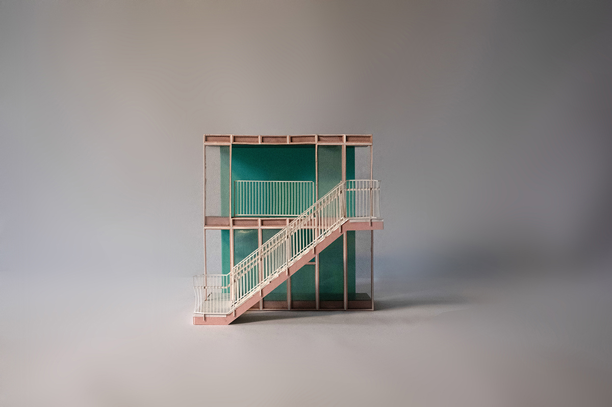
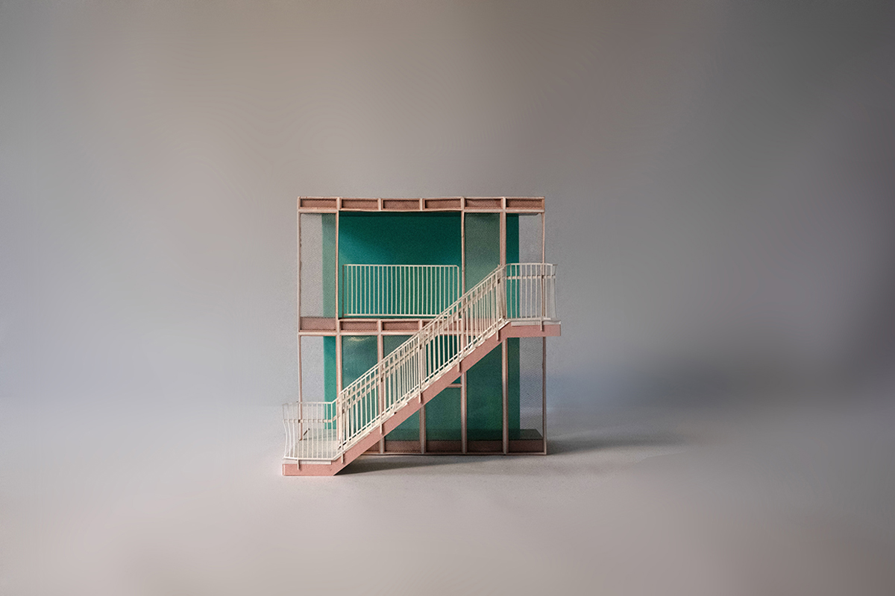

A model of affordable housing for which every household applies with a separate “partner household,” with which they share collective living spaces. An aggregation of dwelling units follow one another in a compound linear sequence. Between each module are the building’s collective spaces: living rooms and dining rooms, rooms for playing games and rooms for making art. As it folds upon itself, the building anticipates negotiations and performances across the various screens that divide public and private life.
The compound linearity of the building’s dwelling units is repeated at the scale of the unit. Each unit is subdivided into one or two bedrooms and a kitchen. Space is distributed evenly; there is no primary suite. The generous spatial provision of a single-loaded corridor necessitates efficient unit layouts. Wet walls are strategically placed to minimize plumbing. Bedrooms are compact, but with a maximum provision of light and air.
The modular sequence of dwelling units is extruded five stories. Three oversized staircases bisect the building, connecting the public realm with the most private domestic spaces. A single-loaded corridor snakes across alternating faces of the building. The facade is clad in standing seam aluminum, delivered in one foot rolls and assembled on-site.


 
